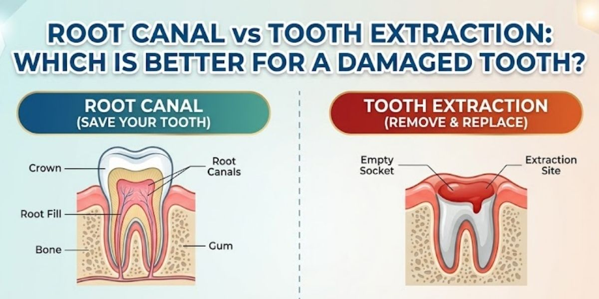

Our Location
Our Location
1st Floor, D2, Shubham Enclave, Paschim Vihar, New Delhi - 110063
 +91- 9310999214
+91- 9310999214
Call for free consultation
Root Canal vs Tooth Extraction: Which Is Better for a Damaged Tooth?
When a damaged tooth starts hurting, most people want one thing: for it to stop. But there is often more than one way to get there. Root canal treatment removes infected or inflamed tissue from inside the tooth while keeping the natural tooth in place. Tooth extraction, on the other hand, removes the tooth altogether. So when it comes to root canal vs extraction, which option is actually better? The answer depends on how much damage the tooth has suffered, whether it can still be restored, and what delivers the better long-term outcome. At Dental Care 'N' Cure in Paschim Vihar, treatment planning starts with understanding the tooth itself, not with rushing straight to removal.

Root Canal vs Tooth Extraction: What's the Difference?
The simplest way to understand root canal vs tooth extraction is to look at what each treatment is trying to achieve.
A root canal treats the inside of a tooth once the dental pulp becomes inflamed or infected. During the procedure, the dentist removes the affected pulp, cleans and disinfects the root canal system, then fills and seals it. The tooth typically needs a permanent restoration, such as a crown, afterward to protect what remains of its structure.
Tooth extraction takes a different route. Instead of treating the inside of the tooth, the dentist removes the entire tooth from its socket.
That's what makes tooth extraction vs root canal more than a simple comparison of two procedures. One approach aims to preserve your natural tooth; the other removes it and may create the need for tooth replacement later.
And yes, this is exactly where the idea of "just pull it out" turns out to be a little less simple than it sounds.
When Is Root Canal Treatment Needed?
A root canal is considered when the pulp inside a tooth becomes irreversibly inflamed or infected, and the tooth is still suitable for restoration.
Deep tooth decay is one common cause. A cracked or broken tooth, repeated dental procedures, or trauma can also affect the pulp. Left untreated, a pulp infection can lead to persistent pain or a dental abscess.
Common signs you may need a root canal:
- Persistent tooth pain
- Sensitivity to hot or cold
- Pain when biting or chewing
- Swelling around the tooth
- Tender or swollen gums
- Visible signs of infection near the tooth
Not everyone experiences all of these symptoms. In fact, the absence of severe pain does not automatically mean there is no underlying problem.
Benefits of saving the natural tooth
The main benefit of root canal treatment is that it treats the source of the problem while preserving your natural tooth. Keeping that tooth helps maintain normal chewing function and avoids the immediate consequences of tooth loss. The AAE recommends considering options to save a natural tooth whenever that is realistically possible.
At Dental Care 'N' Cure , patients who need endodontic treatment can discuss whether a single-sitting RCT in Paschim Vihar is suitable for their particular tooth. The number of visits required depends on the clinical situation, so it's best to follow your dentist's assessment rather than assume every root canal follows the same timetable.
When Is Tooth Extraction Necessary?
A root canal cannot save every tooth.
Sometimes the damage is simply too extensive. A tooth may have severe structural damage, an unfavourable fracture, or insufficient supporting tissue, making restoration unrealistic. In these situations, extraction may be the more appropriate treatment. The AAE's treatment-planning guidance emphasizes assessing the prognosis and restorability of the individual tooth before deciding whether extraction is necessary.
This is why the question of tooth extraction or root canal, which is better, doesn't have the same answer for everyone.
If a tooth cannot be predictably restored, trying to save it at all costs may only delay the treatment you actually need. On the other hand, if the tooth can be saved, removing it without weighing the alternatives may create a new problem: a missing tooth.
So the first question shouldn't be, "Which treatment is easier?" It should be, "Can this tooth be saved and restored properly?"
Root Canal or Extraction: Which Is Better?
If you're searching for root canal or extraction, you're probably hoping for a straightforward winner. Unfortunately, dentistry doesn't work like a championship final.
When a tooth is restorable, preserving the natural tooth is generally an important option to consider. Natural teeth are designed to work together with the surrounding teeth, gums, and supporting structures. The AAE notes that extraction can lead to shifting of neighbouring teeth and may affect chewing, while replacing a missing tooth can require additional treatment.
Root canal therapy tends to make sense when the tooth has a reasonable prognosis and enough healthy structure remains for restoration. Extraction, however, can be the right choice when the tooth has a poor prognosis and cannot be predictably restored.
That's the real answer to tooth extraction vs root canal: the better treatment is the one that suits the condition of your tooth and supports your long-term dental health.
Root Canal vs Extraction: Pain and Recovery
Pain is usually high on the list of concerns, and understandably so — nobody volunteers for a dental procedure for fun.
Modern dental treatment uses local anaesthesia to control discomfort during treatment. The AAE states that root canal treatment is designed to be performed comfortably with modern techniques and effective anaesthesia. Some tenderness can occur afterward as the tissues settle.
Root canal recovery varies depending on the tooth and the treatment involved. Your dentist may advise you on chewing, medication, follow-up visits, and the restoration needed to protect the tooth.
Tooth extraction recovery also depends on the type of extraction and your individual circumstances. Extraction has one additional consideration, though: the tooth is gone. If you want to restore it, you may need another procedure later.
So comparing root canal pain with tooth extraction pain alone doesn't tell the whole story. The condition of the tooth, the complexity of treatment, and what happens afterward all matter.
What Happens After a Tooth Extraction?
The end of an extraction isn't necessarily the end of the treatment plan.
When a tooth is removed, the resulting space may need attention. Depending on its location and your circumstances, your dentist may discuss options such as a dental implant, dental bridge, or removable partial denture.
A dental implant treatment in Paschim Vihar may be considered when an implant is appropriate for replacing a missing tooth. An implant isn't automatically the right choice for everyone — your dentist needs to assess factors such as your oral health, gums, available bone, and overall treatment plan.
If several teeth have significant problems, treatment may call for a broader approach. Full mouth rehabilitation in Delhi can involve comprehensive restorative planning when multiple teeth or areas of the mouth need attention.
This is one reason it's useful to think beyond the immediate tooth removal. Extraction may solve the damaged-tooth problem, but it's worth considering what happens to the empty space afterward.
Root Canal vs Extraction: What About Cost?
Another common question is the root canal cost vs tooth extraction cost.
It's tempting to compare the price tags and choose whichever looks cheaper, but that leaves out an important part of the calculation.
A root canal may need a crown or another permanent restoration afterward. Extraction may initially cost less as a standalone procedure, but replacing the missing tooth with an implant, bridge, or other restoration adds further treatment. The AAE specifically recommends considering the broader treatment requirements when comparing root canal treatment with extraction.
The actual cost varies from patient to patient, depending on the tooth involved, the complexity of treatment, the restoration required, and the replacement option if extraction becomes necessary.
So rather than asking only, "Which is cheaper today?" it helps to ask, "What treatment will I need from start to finish?"
How Does a Dentist Decide Between Root Canal and Extraction?
A proper dentist's recommendation comes after examining the tooth, not simply from how much it hurts.
Factors that affect the treatment decision:
- How much healthy tooth structure remains
- Whether the tooth is restorable
- The condition of the dental pulp
- The extent of tooth decay or infection
- Whether the tooth has a significant crack or fracture
- The condition of the gums and surrounding bone
- The tooth's overall prognosis
- Your broader dental treatment plan
- Whether the tooth can be restored and maintained long term
When an endodontist may be involved
An endodontist has additional training in treating diseases and injuries involving the dental pulp and the tissues around the roots, so difficult cases may call for specialist assessment.
This assessment matters because a tooth that looks badly damaged isn't automatically a lost cause. At the same time, a tooth that looks fine from the outside can have deeper problems that affect its prognosis. That's why tooth restorability is one of the most important factors in the decision.
Also Read: How to Prepare for the First Dental Appointment in Delhi – Here's What to Expect
Can a Root Canal Tooth Last?
A properly treated and restored tooth can go on functioning for many years. The AAE notes that, with proper care, many teeth treated with root canal therapy can last a lifetime.
The restoration matters too. After the infected pulp is removed and the tooth is cleaned and sealed, the dentist may recommend a dental crown or another restoration depending on how much tooth structure remains. The goal is to protect the treated tooth and restore its function.
In other words, root canal treatment is not always the final step — restoring the tooth properly is part of the bigger picture.
What If the Tooth Cannot Be Saved?
Sometimes extraction really is the right answer.
If a tooth cannot be predictably restored, removing it may prevent the problem from continuing. Your dentist can then discuss missing-tooth replacement options based on your needs.
A dental implant is one option; bridges and removable partial dentures may also be considered. The AAE recommends discussing replacement options after extraction, since a missing tooth can affect chewing and allow neighbouring teeth to shift.
The important thing is not to treat extraction as a failure. Sometimes a tooth has reached a point where keeping it would not give a predictable long-term result — the goal is healthy function, not winning an argument with a tooth that has already given up.
Root Canal vs Tooth Extraction: The Bottom Line
Deciding between a root canal and a tooth extraction depends on more than just the two methods themselves — it comes down to a combination of factors. In an ideal case, where the tooth is in good condition for restoration, a root canal can help you keep it. But if a tooth is badly damaged or not a good candidate for restoration, extraction may be your best option.
Ultimately, it's a question of the type of problem you have, the extent of infection, how much of the tooth remains, the condition of your gums and bone tissue, and your overall outlook for the tooth over time.
Dental Care 'N' Cure in Paschim Vihar can help diagnose whether your tooth needs treatment and walk you through your options in detail if you're unsure. Call us to book an appointment and take one more step toward a healthy mouth.